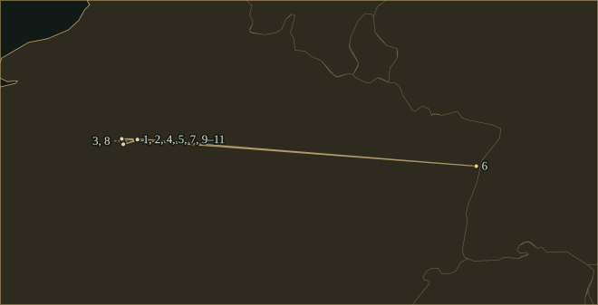
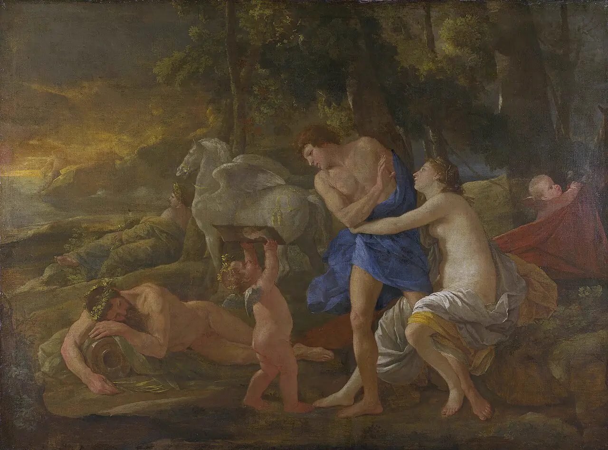
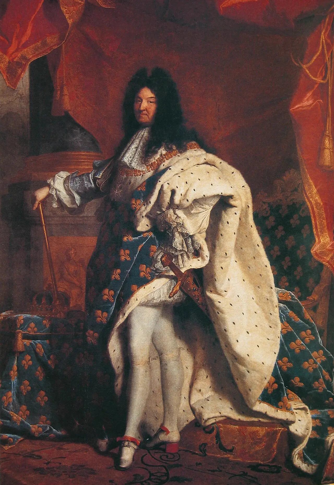

ÉlisabethJacquet de La Guerre
Parisian harpsichordist and composer who played for Louis XIV as a child and published harpsichord suites, violin sonatas, cantatas and the opera Céphale et Procris.
- Trained
- In Paris with her father, the organist Claude Jacquet; harpsichord and singing at court from the age of five
- At court
- Played for Louis XIV as a child; three or four years at Madame de Montespan’s side; left the court on her marriage in 1684
- In Paris
- Taught and gave concerts in her apartment on the Île Saint-Louis; married to the organist Marin de La Guerre
- Output
- Harpsichord suites, trio and violin sonatas, cantatas, the opera Céphale et Procris and a lost Te Deum
“Finding in me at the age of five some disposition for the harpsichord, you ordered that care be taken to bring me up in it.”
Life
Élisabeth Jacquet was baptised in Paris on 17 March 1665. Her father, Claude Jacquet, was organist of Saint-Louis-en-l’Île, on the island in the Seine now called the Île Saint-Louis, and Catherine Cessac describes him as an excellent teacher. All four of his children became musicians: Pierre and Nicolas as organists, Anne as an instrumentalist in the household of Mademoiselle de Guise, and Élisabeth as a harpsichordist and singer. A great-uncle, Jehan Jacquet, and an uncle, also named Claude, were makers of musical instruments.
1670–84The court
The dedication of her first printed book, in 1687, told Louis XIV how her training began. “Finding in me at the age of five some disposition for the harpsichord,” she wrote, “you ordered that care be taken to bring me up in it.” Cessac writes that she made her debut at court at that age, playing and singing before the king, and that he protected her and gave her the means to publish. Évrard Titon du Tillet, who gave her a long entry in his Parnasse françois of 1732, wrote that she was barely fifteen when she appeared at court, that the king took great pleasure in hearing her, and that Madame de Montespan kept her three or four years at her side to entertain herself and her visitors.
On 23 September 1684 she married Marin de La Guerre, an organist whom Titon places at Saint-Séverin. Marriage meant leaving the court. The couple lived in Paris on the island, in the rue Guillaume, the address printed on the title page of her first book. Cessac writes that she gave lessons and concerts in her apartment and that they soon had a reputation. Titon described her audience as the great musicians and the good judges, and singled out her improvising: “sometimes for a whole half-hour she continued a prelude and a fantasia, with extremely varied melodies and chords of excellent taste.” Their only son, Titon added, played the harpsichord with surprising skill at eight and died in his tenth year.
1687–94Harpsichord book and opera
The king’s privilege for her harpsichord pieces is dated January 1687, and Henri de Baussen engraved them. In March the Mercure galant reported that the book was dedicated to the king and held several suites with preludes, fantasias, toccatas, allemandes, courantes, sarabandes, gigues, canaries, minuets, gavottes and chaconnes. It said that most of the pieces suited a treble violin or viol with a bass, and that the whole second suite imitated the lute.
In the dedication she described a pastorale she had set to music, “a thing that no one of my sex has yet attempted”. The court heard it in five consecutive performances, with dances by princesses of the court, and the Dauphine asked for it at her own residence. The king then commissioned a divertissement for the marriage of Mademoiselle de Nantes, which was ready in time but was not used. She ended the dedication with the hope of presenting three new operas that she had ready. The music of the pastorale has not survived.
Her Céphale et Procris, a tragédie en musique in a prologue and five acts to a libretto by Joseph-François Duché de Vancy, was given by the Académie royale de musique at the Palais-Royal in March 1694. Cessac calls it the first opera composed in France by a woman. The prologue, for Flore, Pan and Nérée with choruses of nymphs and fauns, praises the king. In the last act Céphale’s arrow wounds Procris and she dies, and the printed libretto ends with his final speech. Ballard printed the score in the same year with a dedication to the king, in which she wrote that his approval of some of her compositions had “given me the courage to undertake this one”. The opera had no great success. Its prologue was revived in 1696 at Strasbourg, where Sébastien de Brossard had founded an Académie de musique.
1695–1715Sonatas and cantatas
Brossard’s copies, made from the originals he borrowed in 1695, include the four trio sonatas for two violins and bass and two further sonatas for solo violin and bass. Twelve years later she published six violin sonatas of her own. The king’s privilege, for sonatas, harpsichord pieces and other vocal and instrumental music, is dated 3 June 1707. The Sonates pour le viollon et pour le clavecin and the Pièces de clavecin qui peuvent se joüer sur le viollon were dedicated to him. The Mercure galant of August 1707 reported that the king received her book at Marly, that she, presented by the duc de Tresmes, thanked him, and that two days later the sonatas were played at his petit couvert by members of the Marchand family. After dinner, the Mercure wrote, the king praised the sonatas and told her “they resembled nothing”; the magazine took the remark as a sign that he found the music beautiful and original. The Journal des sçavans of 1 August 1707 said that connoisseurs found in them “tenderness, much fire, fine harmony, a very happy naturalness”.
Two books of Cantates françoises sur des sujets tirez de l’Ecriture followed in 1708 and 1711, for one voice and continuo, some with instrumental parts. Antoine Houdar de La Motte wrote the poems. The first book holds six cantatas: Esther, the crossing of the Red Sea, Jacob and Rachel, Jonas, Susanna and the elders, and Judith. Reviewing it on 7 January 1709, the Journal des sçavans said that these cantatas were “of a new genre” and that until then it had been thought that only the playfulness and marvels of fable suited music. A third collection, published in 1715, holds three secular cantatas, Sémélé, L’Île de Délos and Le Sommeil d’Ulisse. It was addressed to Maximilian II Emanuel, Elector of Bavaria; the rest of her published works were dedicated to the king. The collection also contains a comic duet, Le Raccommodement comique de Pierrot et de Nicole, which was used in Lesage’s La Ceinture de Vénus at the Foire Saint-Germain in 1715.
1721–29Last years
Marin de La Guerre died in 1704. In August 1721 she had a Te Deum performed in the chapel of the Louvre in thanks for the recovery of Louis XV; the music is lost. Titon wrote that her last works had not been printed and were in the hands of her heirs. She died in Paris on 27 June 1729 and was buried at Saint-Eustache.
Titon wrote of her that “never has anyone of her sex had such great talents as she for composing music”, and that she played the harpsichord and the organ admirably. A print by L. Crépy, dated 1729, shows a medal with her profile on one face and, on the other, a woman seated at a harpsichord beneath the legend “Aux grands Musiciens j’ay disputé le prix” (“I have contested the prize with the great musicians”).
Places

All 11 places, with sources
- Île Saint-Louis, Paris · 1665–1684 · childhood (inferred)
Her father, the organist Claude Jacquet, held the post at Saint-Louis-en-l’Île, and the dedication of her first book mentions a long retreat at her father’s house. No source consulted gives the family’s address during her childhood; the island is inferred from her father’s post.
Dedication of Les Pièces de clavessin (1687), transcribed in the Philidor catalogue, collection EJG.recueil.01 · Catherine Cessac, Elisabeth Jacquet de La Guerre, France Archives
- Paris · 1665-03-17 · born
Baptised in Paris on 17 March 1665. The sources consulted do not name the parish or give a birth date; the point marks the city.
Catherine Cessac, Elisabeth Jacquet de La Guerre, France Archives (Recueil des Commémorations 2015) · Radio France, biography of Élisabeth Jacquet de La Guerre
- Court of Louis XIV (Versailles) · 1680–1684 · worked (inferred)
Titon du Tillet wrote that she was barely fifteen when she appeared at court and that Madame de Montespan kept her three or four years; Cessac gives three, and Radio France dates her entry to the court to 1682, at seventeen. The sources consulted do not name the residence, and the start year is counted as fifteen years from her baptism. Versailles is used here to stand for the court.
Titon du Tillet, Le Parnasse françois (1732), entry CCXLIX, p. 635 · Catherine Cessac, Elisabeth Jacquet de La Guerre, France Archives
- Rue Guillaume (now rue Budé), Île Saint-Louis, Paris · 1687 · lived
The title page of her first book gives her address as the rue Guillaume on the Isle Notre-Dame, the older name of the Île Saint-Louis. The street is now the rue Budé; the coordinates mark the modern street.
Title page of Les Pièces de clavessin (1687), Philidor catalogue, EJG.recueil.01 · Wikipedia: rue Budé (formerly rue Guillaume), with coordinates
- Palais-Royal, Paris · 1694-03 · premiere
First performance of her tragédie en musique by the Académie royale de musique at the Palais-Royal. Sources give 15 March (Radio France) and 17 March (IMSLP); the month is common to both. Céphale et Procris.
Catalogue de l’œuvre d’Élisabeth Jacquet de La Guerre, introduction (CMBV, Philidor) · Céphale et Procris, libretto printed by Christophe Ballard, 1694 (Internet Archive) · Radio France, biography of Élisabeth Jacquet de La Guerre · IMSLP: Céphale et Procris, EJG.24
- Strasbourg · 1696 · premiere
The prologue of Céphale et Procris was revived at the Académie de musique that Sébastien de Brossard had founded. This was a revival of part of the opera, and no source places her in the city. Céphale et Procris.
Catalogue de l’œuvre d’Élisabeth Jacquet de La Guerre, introduction (CMBV, Philidor)
- Rue Regrattière (now rue Le Regrattier), Île Saint-Louis, Paris · 1707 · lived
The 1707 title page gives her address as the rue Regrattière on the Isle Notre-Dame and lists her as one of four places of sale. The street is now the rue Le Regrattier; the coordinates mark the modern street.
Title page of the 1707 volume, Philidor catalogue, EJG.recueil.02 · Wikipedia: rue Le Regrattier (rue Regrattière from 1627), with coordinates
- Château de Marly · 1707 · travelled
The Mercure galant of August 1707 reported that the king received her book of sonatas and harpsichord pieces at Marly, and that two days later the sonatas were played in his presence at his petit couvert. The magazine does not name the room of the performance. Sonates pour le viollon et pour le clavecin.
Mercure galant, August 1707, pp. 193–195, as quoted in the Philidor catalogue, EJG.recueil.02
- Louvre, Paris · 1721-08 · premiere
Her Te Deum à grands chœurs was performed in the chapel of the Louvre in thanks for the recovery of Louis XV. The music is lost. Te Deum.
Catherine Cessac, Elisabeth Jacquet de La Guerre, France Archives · Titon du Tillet, Le Parnasse françois (1732), entry CCXLIX, p. 636
- Saint-Eustache, Paris · 1729 · buried
Titon du Tillet stated that she was buried at Saint-Eustache. The sources consulted do not give the day of the funeral.
Titon du Tillet, Le Parnasse françois (1732), entry CCXLIX, p. 635
- Paris · 1729-06-27 · died
Died in Paris on 27 June 1729. The sources consulted do not name the street.
Titon du Tillet, Le Parnasse françois (1732), entry CCXLIX, p. 635 · Catherine Cessac, Elisabeth Jacquet de La Guerre, France Archives
Influences
Teachers, encounters and borrowed music, each with its account and sources in the Web of Influence.
Influences received
Influences passed on
- None listed.
The Sound
𝄞Preludes
The prelude of the D minor suite in the 1687 book is written without bar lines or fixed note values, as long notes joined by slurs with short runs between them, and the player decides how long each lasts. Titon du Tillet wrote that her own preluding at the harpsichord could continue for half an hour.
♮Suites
Each of the four suites of 1687 has an allemande, two courantes, a sarabande and a gigue. Three begin with a prelude and the F major suite with a tocade. Canaries appear in the D minor and F major suites, chaconnes in the D minor and A minor suites, and a gavotte in the A minor suite; each suite includes a minuet. Chaconne l’Inconstante, in the D minor suite, alternates a four-bar refrain in D major with couplets in D minor, and the edition by Steve Wiberg numbers the couplets up to a fifth.
𝄢Treble over bass
The Mercure galant of March 1687 said that most of the pieces suited a treble violin or viol with a bass. In the first four bars of the D minor Menuet the right hand lies between C♯5 and B♭5 and the left hand between E3 and D4. There is one melodic line above a bass line, with ornament signs on the long notes.
♩Violin sonatas
The six sonatas of 1707 are in D minor, D major, F major, G major, A minor and A major. Their movements have Italian headings, among them Presto, Adagio and Aria, and the fifth and sixth sonatas include a Courante and an Allemande. Brossard’s manuscripts, dated about 1695, also give the earlier trio sonatas Italian titles.
♯Cantatas
The cantatas of 1708 and 1711 are for one voice with continuo, and the title page of the first book states that some have instrumental parts and some do not. The subjects are episodes from the Old Testament, told in French poems by Houdar de La Motte. The three secular cantatas of 1715 take their subjects from Greek myth.
𝄾Opera
The prologue of Céphale et Procris includes a Rondeau, two passe-pieds, a Loure and a Gigue among its numbers, as named in the track list of the 2024 recording. Ballard’s printed score is a reduction, and only the two upper instrumental parts and the continuo line survive.
Works
A selection from the composer’s works.
- before 1687Pastorale en musiqueEJG.20Scoring unknownGiven five times before the court, with dances by princesses of the court, according to the dedication of the 1687 harpsichord book. The music is lost.
- 1687Les Pièces de clavessin, premier livreEJG.01–04HarpsichordFour suites, in D minor, G minor, A minor and F major, dedicated to Louis XIV. The D minor suite contains the Chaconne l’Inconstante.
- c. 1691Jeux à l’honneur de la victoireEJG.23BalletOnly the libretto survives.
- 1694Céphale et ProcrisEJG.24Tragédie en musique in a prologue and five actsLibretto by Joseph-François Duché de Vancy. Performed at the Palais-Royal in March 1694 and printed by Ballard the same year.
- c. 1695Trio sonatas and violin sonatas, manuscriptEJG.08–13Two violins or violin and bass viol, with continuoFour trio sonatas and two violin sonatas copied by Sébastien de Brossard; the originals of the trio sonatas were lent to him in 1695.
- 1707Pièces de clavecin qui peuvent se joüer sur le viollonEJG.05–06HarpsichordTwo suites, in D minor and G major, seventeen pieces in all, dedicated to Louis XIV.Recordings in the Hall
- 1707Sonates pour le viollon et pour le clavecinEJG.14–19Violin and continuoSix sonatas dedicated to Louis XIV. The Mercure galant reported a performance at the king’s petit couvert in August 1707.
- 1708Cantates françoises sur des sujets tirez de l’Ecriture, livre premierEJG.25–30Voice and continuo, some with instrumentsSix cantatas to poems by Houdar de La Motte: Esther, Le Passage de la mer Rouge, Jacob et Rachel, Jonas, Susanne et les vieillards and Judith.
- 1711Cantates françoises sur des sujets tirez de l’Ecriture, livre secondEJG.31–36Voice and continuo, some with instrumentsSix further cantatas: Adam, Le Temple rebâti, Le Déluge, Joseph, Jephté and Samson.
- 1715Cantates françoises, third collectionEJG.37–40Voice and continuoSémélé, L’Île de Délos and Le Sommeil d’Ulisse, with the duet Le Raccommodement comique de Pierrot et de Nicole. Addressed to Maximilian II Emanuel, Elector of Bavaria.
- 1721Te DeumEJG.50Grand motetPerformed in the chapel of the Louvre in August 1721 in thanks for the recovery of Louis XV. Lost.
In the Score
Short examples, engraved and playable.
Chaconne l’Inconstante — quotationThe refrain, bars 1–4
Menuet — quotationOpening phrase, bars 1–4
Sister Arts


The National Gallery describes Aurora, goddess of dawn, as in love with the mortal Cephalus, who turns away and looks at a portrait of his wife Procris held by a winged putto. Aurore, Céphale and Procris are the principal roles in Duché de Vancy’s libretto for Jacquet de La Guerre’s opera, whose story also came from Ovid’s Metamorphoses. Poussin painted the subject about sixty years before the opera was staged.


Rigaud signed and dated the portrait 1701; the Louvre record describes the king in the coronation mantle and the costume of grand master of the Order of the Holy Spirit. Jacquet de La Guerre dedicated nearly all her published works to him, and the Mercure galant reported in August 1707 that her violin sonatas were played at his petit couvert six years after this picture was painted.

The title page reads “Céphale et Procris, tragédie mise en musique par Mademoiselle de La Guerre”, with the imprint of Christophe Ballard, “seul imprimeur du Roy pour la musique”, rue Saint-Jean-de-Beauvais, and the date M. DC. XCIV. A decorated panel with a seated figure holding a lyre fills the middle of the page.
Recommended recordings
- Pièces de clavecin, suites from the 1687 and 1707 booksBlandine Verlet, harpsichordAuvidis · 1998The recording has twenty-six tracks. The set opens with the D minor suite of 1687, whose Chaconne l’Inconstante runs 3:28 in this performance.
- Sonates pour le violon (1707)Les Dominos; Florence Malgoire, violinOuthere · 2011All six sonatas, 34 tracks, with each movement listed separately.
- Le Sommeil d’Ulisse; Samson; harpsichord pieces; violin sonata in D minorIsabelle Desrochers, soprano; Les Voix Humaines; Christine PayeuxAlpha · 2000Two cantatas, a Prélude and a Chaconne for harpsichord in A minor, and a sonata for violin and continuo in D minor. The Sommeil movement of Le Sommeil d’Ulisse lasts 7:52.
- Céphale et ProcrisReinoud Van Mechelen, Deborah Cachet, Ema Nikolovska, Marc Mauillon; Chœur de Chambre de Namur; A Nocte TemporisChâteau de Versailles Spectacles, CVS119 · 2024The opera complete on two CDs, released on 9 February 2024.
Where to hear more
- Céphale et Procris1694Reinoud Van Mechelen, Deborah Cachet, Ema Nikolovska, Marc Mauillon; Chœur de Chambre de Namur; A Nocte Temporis · Château de Versailles Spectacles, CVS119
The complete tragédie en musique, with a prologue and five acts, on two CDs, released on 9 February 2024. The track list opens with the Ouverture, 3:44, and lists the dances of the prologue separately.
- Pièces de clavecin — suites from the books of 1687 and 17071687, 1707Blandine Verlet, harpsichord · Auvidis
The recording has twenty-six tracks. The set opens with the D minor suite of 1687, from the Prélude to the Chaconne l’Inconstante, which runs 3:28 here, and continues with the G minor suite and later suites.
- Sonates pour le violon (1707)1707Les Dominos; Florence Malgoire, violin · Outhere
All six sonatas, each movement listed separately. The movement headings include Lent, Presto, Adagio and Aria, with a Courante in the fifth sonata and an Allemande in the sixth.
- Le Sommeil d’Ulisse; Samson; Prélude and Chaconne in A minor; Sonata in D minor1687–1715Isabelle Desrochers, soprano; Les Voix Humaines; Christine Payeux · Alpha
Two cantatas, two harpsichord pieces and a sonata for violin and continuo in D minor. The Sommeil movement of Le Sommeil d’Ulisse lasts 7:52.
These recordings are under copyright, so the Hall cannot play them; the links go to the labels’ and artists’ own uploads and to streaming services.
Lineage
Her father Claude Jacquet taught her. Radio France’s biographical note places Céphale et Procris in the line of Lully, and the sonata she wrote for Brossard and for the king belongs to the genre that came to France from Italy. The same note lists her godson Louis-Claude Daquin among her pupils.
Further reading
- Catherine Cessac, Élisabeth Jacquet de La Guerre, une femme compositeur sous le règne de Louis XIV (Arles: Actes Sud, 1995).biography
The standard biography of a harpsichordist trained at court who became a published composer of sonatas, cantatas and an opera, by the scholar who also compiled the catalogue of the works. Listed in the bibliography of the Philidor catalogue.
- Élisabeth-Claude Jacquet de La Guerre, The Collected Works, 6 vols. (New York: The Broude Trust, 2005–13). Vol. 1, harpsichord works, ed. Arthur Lawrence, with a biographical essay by Mary Cyr (2008); vol. 2, instrumental works, ed. Mary Cyr (2008); vol. 5, Céphale et Procris, ed. Albert Cohen (2013).edition
The edition prints the harpsichord books, the sonatas, the cantatas and the opera with critical commentary. The commentary sets out which sources survive for each work and how the two printings of the 1687 book and the manuscript copies differ.
- Catherine Cessac, Catalogue de l’œuvre d’Élisabeth Jacquet de La Guerre (1665–1729), Centre de musique baroque de Versailles, portail Philidor.catalogue
Each entry transcribes the title page of the collection, gives its dedication and reviews, and quotes the Mercure galant, the Journal des sçavans and Brossard’s catalogue.
- Évrard Titon du Tillet, Le Parnasse françois (Paris: Jean-Baptiste Coignard, 1732), entry CCXLIX, pp. 635–36.primary source
Titon du Tillet’s account, written soon after her death, recounts her years at court, her marriage, her improvising and her works, and records her death and burial.
- Mary Cyr, “Elisabeth Jacquet de La Guerre: Myth or Marvel? Seeking the Composer’s Individuality”, The Musical Times 149 (Winter 2008), pp. 79–87.article
The article takes up the question named in its subtitle, whether her music shows an individual voice. It is listed in the bibliography of the Philidor catalogue.
Cite this page
Contrapunctus. “Élisabeth Jacquet de La Guerre.” Accessed 20 October 2026. https://mottopanikeiku.github.io/contrapunctus/composers/jacquet-de-la-guerre.html.
@misc{contrapunctus-composers-jacquet-de-la-guerre,
author = {{Contrapunctus}},
title = {Élisabeth Jacquet de La Guerre},
howpublished = {\url{https://mottopanikeiku.github.io/contrapunctus/composers/jacquet-de-la-guerre.html}},
note = {Accessed 2026-10-20}
}